已判 0 / 14 条 · 判完了
弹窗标签推送系统 · 2026-10-16 · 第 5 份产出
第 5 份｜玩家来问「为什么没收到推送、为什么没看到弹窗」，客服按玩家查询这一页，能不能查出原因、给出答复？
按下面 14 条标准逐条看 AI 评审的结论（每条只答「符合」或「不符合」），你只判同意或不同意；也可补标准里缺的条目。
「客服」＝页上新增的客服角色：只能查玩家、看操作纪录、做客服处置（弹窗减量、记录客诉）；这一角色是夜里补的，你还没确认。
01判断标准：6 条，按客服排查的先后排
功能覆盖推送现在能不能收到
1能看到玩家每种推送方式现在能不能收到；收不到的写出具体原因，以及是什么时候变成这样的
例：通知关闭、未绑定 Facebook、删除 LINE 好友、换了手机号
玩家会这样问 「我从来收不到 LINE 通知」|出处 业内做法：Braze、OneSignal、CleverTap
业内顶尖产品怎么做
- Braze：按外部 ID、邮箱、手机号、推送令牌查到用户；档案「Engagement」页签列邮件、短信、推送的订阅状态，并带推送令牌的变更记录 Braze 文档
- OneSignal：每台设备、每个渠道一条订阅，状态分已订阅／已退订／从未订阅，另有原因码（如 -2 主动退订、-10 卸载或在系统里关了通知）；文档提醒状态可能滞后，iOS 卸载、关通知可能 14 天以上才回报 OneSignal 文档
- CleverTap：用户档案的可达性一栏逐渠道写「可达／不可达」（推播、邮件、短信、网页推送） CleverTap 文档
我们原型对应的部分
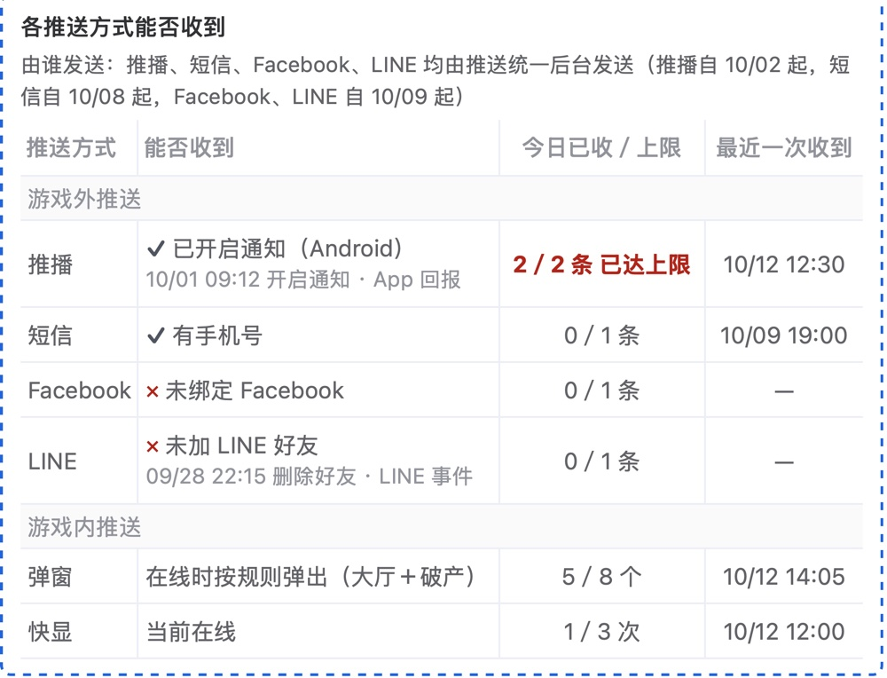
玩家查询 › 各推送方式能否收到
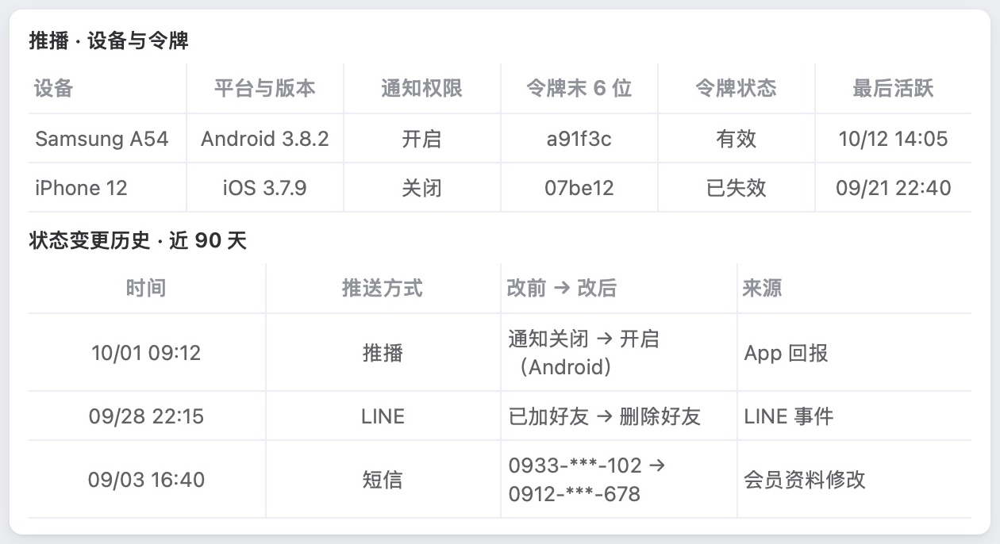
玩家查询 › 可触达明细（展开）
收不到的原因：未装 App、通知关闭、无有效手机号、已退订、未绑定 Facebook、未加 LINE 好友、已封锁、平台限制。做不到回写状态变化的推送方式只写当前状态。
AI 评审：是 每种方式一行，写原因、最近变化时间与来源；90 天历史含换号
你判：
功能覆盖推送拦在哪一步
2只记得推送名称或大概日期，也能找到那一条，看出这位玩家收到没有；没收到的写明拦在哪一步和当时的数
例：频率上限拦下（推播今日已收 2／2）、勿扰时段放弃、服务商未送达
玩家会这样问 「昨晚那条每日补给通知我没收到」|出处 你定的：玩家查询扩为查一位玩家收到的全部弹窗与推送（10/12）；业内做法：OneSignal、Braze
业内顶尖产品怎么做
- OneSignal：单条消息的「Audience activity」按订阅列出已发送、确认收到、已点击、失败（附失败信息，如「Invalid token」）、发送时已不可触达；被频率上限拦下的只出现在汇总数里，不按人列 OneSignal 文档
- Braze：用户档案「Messaging History」列这位用户近 30 天的消息事件（发送、收到、互动），约 40 条 Braze 文档
我们原型对应的部分
玩家查询 › 收到记录 › 按推送查（输入名称、内文关键词或 ID，日期默认近 3 天）
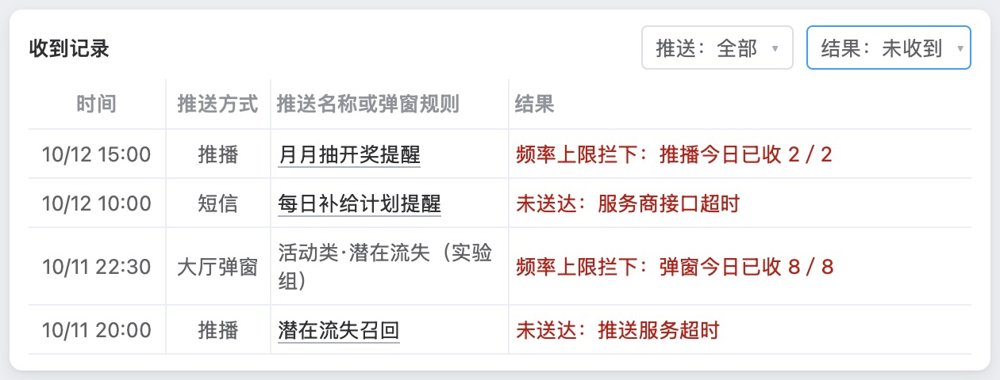
玩家查询 › 收到记录（结果选「未收到」）
AI 评审：是 按名称关键词加日期找推送，看得到有无记录；拦下时写计数与服务商原因
你判：
功能覆盖推送到没到手机
3推播发出后，能确认是否到了玩家手机，iOS 也能
玩家会这样问 「系统说发了，我 iPhone 上没有」|出处 业内做法：OneSignal
业内顶尖产品怎么做
- OneSignal：把「服务商已受理」和「设备确认收到」分开记；确认收到由设备上的 SDK 回报 OneSignal 文档
- OneSignal（iOS）：配好通知服务扩展（Notification Service Extension）与 App Group 后，iOS 也能确认收到；付费方案可用 OneSignal 文档
我们原型对应的部分
Android 推播按到达回执写「已到达」；短信写运营商回执，如已到达：发往 0912-***-678，回执 DELIVRD 10/09 19:00:11
。
iOS 推播只写已发出：该渠道不回传到达
，建议答复请玩家检查手机通知设定；批量查询里单列为「已发出·无法确认到达」，不算收到。
我们这里没有：iOS 推播是否到达手机的确认。
AI 评审：否 文中明写没有 iOS 推播到达确认，只写已发出
你判：
功能覆盖弹窗为什么没弹
4弹窗没弹时，能看到那一次进大厅（或破产）每条规则、每个项目的结果和原因
例：不在对象、冷却中、次数已满、被优先级更高的规则让出、当天额度已满、显示失败
玩家会这样问 「今天登录没看到中秋活动的弹窗」|出处 你定的：玩家查询扩为查一位玩家收到的全部弹窗与推送（10/12）；业内做法：Braze
业内顶尖产品怎么做
- Braze：站内信没弹，由开发人员看事件日志（Event User Log）和用户档案排查；文档列的常见原因：不在分群、不可再次收到、达到频率上限、分到对照组、被优先级更高的站内信让出、图片下载失败 Braze 文档
- 按次列出每条规则的判定结果、给客服看的页面：上列文档都没写
我们原型对应的部分
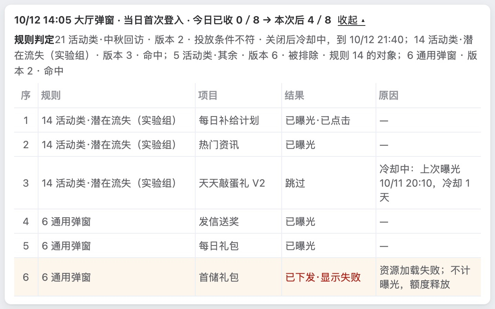
玩家查询 › 收到记录 › 弹窗一行展开（上方「规则判定」一规则一行，下方每个项目一行）
逐项结果从推送统一后台上线日起记，之前只有曝光记录。
AI 评审：否 规则判定只列对象含该玩家的规则，看不到「不在对象」
你判：
状态与防错查不到记录时写明是哪一种
5查不到记录时，页面写明是哪一种情况，客服不会误答「没发给您」
例：当时不在发送对象内、当时收不到、由旧后台发送、超出保留期
玩家会这样问 「上周那条简讯我没收到」|出处 你定的：「全都有记录……但可能会有不全的地方」（10/10）；业内做法：OneSignal
业内顶尖产品怎么做
- OneSignal：单条消息里「发送时已不可触达」与「投递失败」分开列：前者以后不再发，后者下次重试 OneSignal 文档
我们原型对应的部分
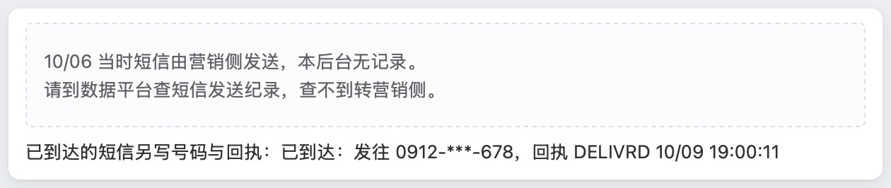
玩家查询 › 收到记录（所选日期早于切换到本后台）
超出 30 天：写记录保留 30 天，这次发送已超出
。
那条推送发过、但没有这位玩家的记录：写这位玩家不在本次的发送对象内，或不可触达
，两种合在一句；发送当时的群组和能否收到不逐条记，可对照可触达明细里的状态变更历史。
AI 评审：否 有发送无记录时只写「不在对象或不可触达」，未写明哪种
你判：
功能覆盖每种原因一句答复
6每一种原因旁都有一句能直接发给玩家的答复（繁體），客服不必自己组织说法
玩家会这样问 以上各种|出处 业内做法：Zendesk
业内顶尖产品怎么做
- Zendesk：「宏」（Macros）是预先写好的答复与操作，客服在工单里选用，可先预览；分共享的和个人的 Zendesk 文档
我们原型对应的部分
玩家查询 › 收到记录 › 结果列（结论、建议答复、复制）
收到记录、弹窗逐项、各推送方式能否收到三处的原因旁都显示「结论」与「建议答复」，一键复制；对照表共 21 种原因。答复是初稿，由运营与客服定稿后存为系统配置，可改。
AI 评审：否 规则判定和空状态旁没有答复，截图 4 弹窗逐项也没有
你判：
业内做法都已打开官方文档核对。
02按评审维度补齐的标准：8 条
按评审维度表补齐其余维度；每条小标前半是所属维度。
信息结构与主次按客服排查的先后排
7玩家查询页按客服排查的先后排：先看玩家现在各推送方式能否收到，再查具体一条推送或一次弹窗，最后给答复
看哪里 玩家查询整页分块与先后|出处 写作标准「内容按什么顺序排要看得出」；业内做法：NN/g
业内顶尖产品怎么做
- NN/g 可用性启发式第 6 条「识别而非回忆」：让需要的信息、操作和选项就在眼前，不让使用者记住上一处看到的内容再到下一处用 NN/g 原文
我们原型对应的部分
自上而下：查询栏 → 玩家信息（左）与「各推送方式能否收到」（右）→ 所属群组 → 目前符合发送对象的推送 → 近 7 天汇总 → 收到记录（可按推送或规则查）→ 自动弹窗顺序、游戏破产弹窗顺序。答复不单列一块，写在收到记录结果列的原因旁。
AI 评审：是 能否收到在首屏右侧，其后收到记录查具体一条，答复写在该条结果列末尾
你判：
视觉完成度八个检查点逐项看
8玩家查询页按视觉完成度八个检查点逐项看，没有一项不符合；其中「能收到／收不到」「已送达／被拦下」这类状态全页用同一组颜色加文字标出
看哪里 玩家查询主图与状态小图|出处 你定的：10/16 要判原型设计是否粗糙；业内做法：NN/g 启发式第 4 条、Ant Design「重复」
业内顶尖产品怎么做
- 1 对齐：同一块的标题、正文、表单项共用一个左侧起点；表单标签冒号对齐；数字取相同位数并右对齐。Ant Design「对齐」 Ant Design 文档
- 2 间距分级：组内、组与组、块与块的间距分三级，全页一致；关系越近间距越小（纵向 8／16／24px）。Ant Design「亲密性」 Ant Design 文档
- 3 字号与字重层级：页标题、块标题、字段名、正文、辅助说明各一级，同级同样式，一眼看得出主次和阅读顺序。NN/g 视觉设计原则「比例」「视觉层级」 NN/g 原文
- 4 对比：主操作与次要操作、必填与选填、可用与禁用在外观上区分得出。NN/g 视觉设计原则「对比」 NN/g 原文
- 5 组件一致：同一种控件全页同一样式和用法，并与现有后台（Element UI 风格）一致；同一操作同一个词。NN/g 启发式第 4 条「一致性与标准」、Ant Design「重复」 NN/g 原文 Ant Design 文档
- 6 颜色与装饰：一色一义、全页固定；没有不承载信息的边框、底色、图标。NN/g 启发式第 8 条「美观与极简」 NN/g 原文
- 7 示例数据：字段里是真实形态的示例值（真实活动名、合理人数与日期），前后一致；玩家看到的文案用繁體；没有「xxx」「示例文字」「123」这类占位。原型要求
- 8 基础排版：文字不截断、不溢出、不互相遮挡；折行在自然停顿处；并列几行前有符号，行间距大于行内。你 10/12：「这三行前面哪怕给打个点……这也太粗糙了吧」
我们原型对应的部分
- 1 对齐：玩家信息「字段: 值」各行；各表格数字列（今日已收／上限、近 7 天汇总）
- 2 间距分级：各块虚线框之间、表格行高、玩家信息与「客服处置」按钮之间
- 3 字号层级：块标题（各推送方式能否收到、收到记录……）、表头、灰色说明小字
- 4 对比：「查询」蓝色主按钮；红字「2／2 条 已达上限」「频率上限拦下」「未送达」与普通结果
- 5 组件一致：筛选下拉（推送／规则、推送、结果）、日期范围、「导出」「客服处置 ▾」按钮；两张弹窗顺序表
- 6 颜色与装饰：状态的颜色与符号——能否收到列 ✓／✕，结果列红字，「1 项未显示」黄底，近 7 天汇总超上限的红字；新增块的蓝色虚线框；玩家信息灰底
- 7 示例数据：会员编号、昵称「我来称王260134709」、打码手机号；「玩家看到的内容」列为繁體（「月月抽今晚開獎……」）；今日已收与收到记录、近 7 天汇总的数字
- 8 基础排版：「玩家看到的内容」列截成「…」；结果列多行折行；收到记录筛选栏右端「导出」按钮；弹窗顺序表「弹窗名称」列折行。空结果等状态小图见第 1–5 条的图
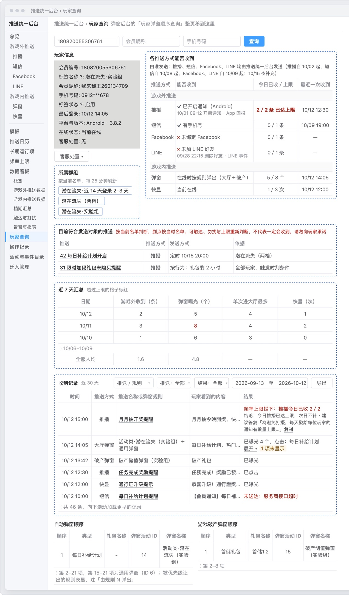
玩家查询 › 整页（去掉编号标注）
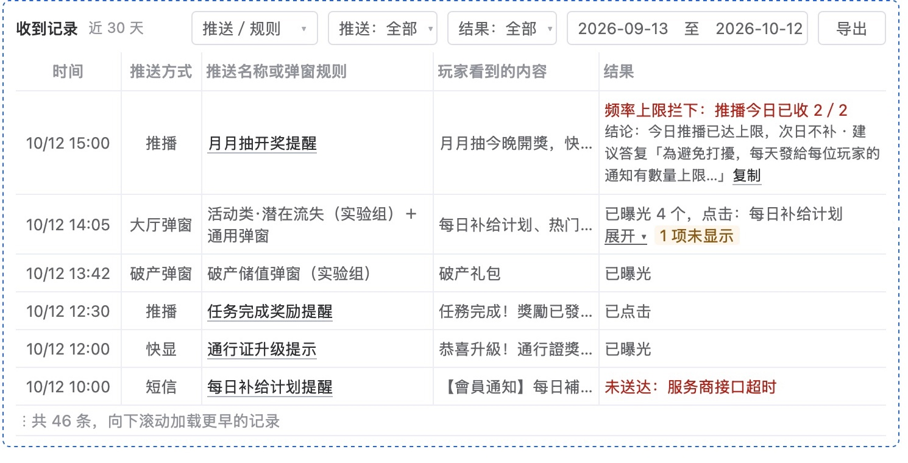
玩家查询 › 收到记录
AI 评审：否 对齐、标题字重、链接样式、状态颜色、示例数据、折行六个检查点不符
你判：
改动可辨沿用与新增分得清
9玩家查询页标出哪些部分沿用现有「玩家弹窗顺序查询」、哪些是本次新增
看哪里 页首「由现有『玩家弹窗顺序查询』扩展而来」及各区块|出处 写作标准「写清是现状还是改后」；原型要求
依据的标准怎么写
- 写作标准：写清是现状还是改后——现状句写「现在」，做法句用「新建、加、改为」或写「改后」；单用「可」「能」会被读成已经能做
- 原型要求：现有页面的改动标「新增」「改」；只看图和右侧说明，就说得出这页让运营做什么、和现状比改了什么
我们原型对应的部分
玩家查询 › 页首
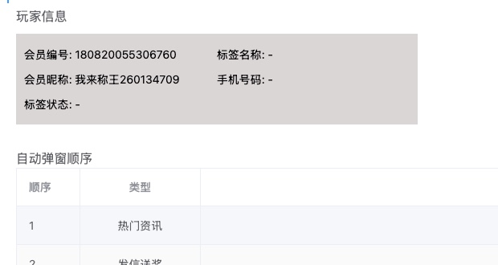
对照：现有弹窗后台 ›「玩家弹窗顺序查询」首屏（局部）
页首写「由现有『玩家弹窗顺序查询』扩展而来」；窗口顶部标「改」：「弹窗后台的『玩家弹窗顺序查询』整页移到这里」。所属群组、各推送方式能否收到、目前符合发送对象的推送、近 7 天汇总、收到记录各标「新增」并用蓝色虚线框出，「客服处置」按钮也标「新增」；右侧说明第 6 条写「两张弹窗顺序表不变」。玩家信息区加了最后登录、平台与版本、在线状态、客服处置四项，写在右侧说明第 7 条，区内没有标记。
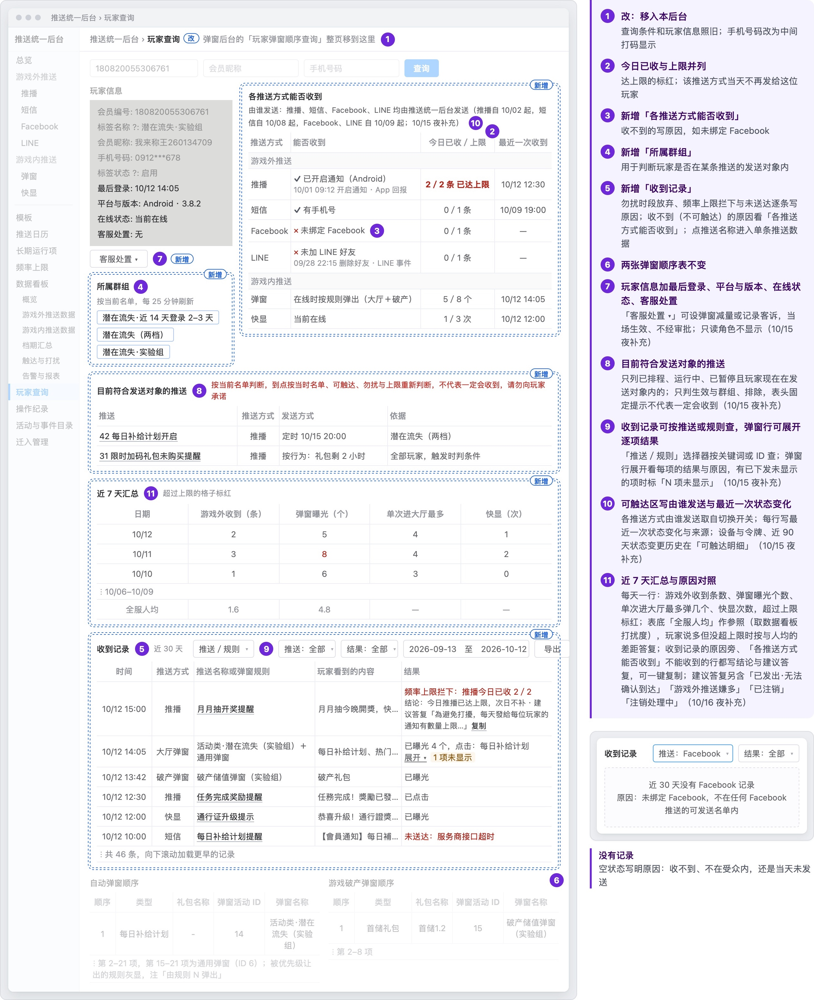
玩家查询 › 原型页原样：「改」「新增」标记与右侧说明
AI 评审：否 玩家信息区新增四行没标「新增」，说明一处写玩家信息照旧、一处写加四项
你判：
方向一致游戏内、游戏外分开
10玩家查询页把游戏外推送（推播、短信、Facebook、LINE）与游戏内推送（弹窗、快显）分开查询、分开显示
看哪里 玩家查询各区块|出处 你定的：10/13 推送分游戏内、游戏外两层
依据的标准怎么写
- 你定的（10/13）：游戏内推送（弹窗、快显：玩家在游戏里才看得到）与游戏外推送（推播、短信、Facebook、LINE：玩家不在游戏里也收得到）是两件事，不能混在一起说；写「推送」时要说清是哪一层；推送统一后台里游戏内与游戏外分开列
我们原型对应的部分
玩家查询 › 各推送方式能否收到
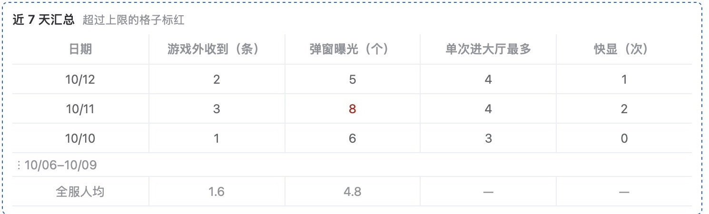
玩家查询 › 近 7 天汇总
「各推送方式能否收到」分「游戏外推送」「游戏内推送」两组行；近 7 天汇总分「游戏外收到（条）」「弹窗曝光（个）」「快显（次）」等列。收到记录是一张表，推播、短信与大厅弹窗、破产弹窗、快显按时间混排（图见第 8 条），「推送方式」筛选的选项按游戏外、游戏内分组。全页一个查询入口。
AI 评审：否 收到记录把推播、短信与弹窗、快显按时间混排在一张表，默认不分开
你判：
事实与依据每种原因都有记录可查
11玩家查询页显示的每种拦截原因和送达状态，在需求文档的记录表（逐人发送明细、设备通知权限）里都有对应字段
看哪里 玩家查询的原因与结果；需求文档记录表|出处 写作标准「事实只写已证实的」
依据的标准怎么写
- 写作标准：事实只写已证实的，不猜；推断可以写，须写明依据和边界
我们原型对应的部分
玩家查询 › 收到记录（只看未收到）
页上出现的原因与状态 能否收到：通知关闭、未装 App、无有效手机号、已退订、未绑定 Facebook、未加 LINE 好友、已封锁、平台限制；令牌有效／已失效。收到记录：频率上限拦下、勿扰时段放弃或顺延、未送达（服务商接口超时、推送服务超时）、已到达、已发出（iOS 不回传）、已曝光、已点击。弹窗逐项：跳过（冷却中）、已下发·显示失败（资源加载失败）。
记录表里的字段 逐人发送明细：「结果」（发送前拦下、服务商未受理、当场拒绝、受理、受理后退回等）、「原因」（无联系方式、已退订、已封锁、平台限制、通知关闭、勿扰时段放弃、频率上限拦下、超时、令牌失效等）、到达时间、短信回执码。逐次显示明细：「结果」（已显示、频率上限拦下、不在线等）、弹窗逐项结果、显示失败回报。设备通知权限表：通知权限、令牌状态、状态变更（改前改后、来源）。
AI 评审：否 页上「注销处理中」状态在逐人发送明细和设备通知权限表里都没有字段
你判：
措辞与指代答复不用后台用语
12玩家查询页给玩家的每句答复用繁體，不含群组、频率上限、冷却、批次这类后台用语
看哪里 结果列的建议答复|出处 写作标准「不用项目内部简称」；业内做法：NN/g
业内顶尖产品怎么做
- NN/g 可用性启发式第 2 条「系统与现实世界匹配」：用使用者熟悉的词语、短语和概念，不用内部行话 NN/g 原文
我们原型对应的部分
玩家查询 › 收到记录 › 结果列（结论、建议答复、复制）
页上可见的答复：「為避免打擾，每天發給每位玩家的通知有數量上限……」「您的註銷申請正在處理中，預計 MM/DD 完成……」。需求文档原因对照共 21 句，例：「為避免夜間打擾，勿擾時段內不發送通知，這則已順延到早上（或已取消）。」「此活動提醒已顯示過，可從大廳活動入口進入。」「系統當時忙碌，這次沒有顯示活動提醒……」
AI 评审：是 21 句建议答复都是繁體，未见群组、频率上限、冷却、批次等用语
你判：
无多余内容只显示排查要用的玩家信息
13玩家查询页只显示排查要用的玩家信息，不显示储值金额等与排查无关的个人资料
看哪里 玩家信息区|出处 写作标准：与项目目标无关的内容删去；业内做法：NN/g
业内顶尖产品怎么做
- NN/g 可用性启发式第 8 条「美观与极简」：界面不放无关或很少用到的信息；每多一个元素，都会和重要信息争夺注意力 NN/g 原文
我们原型对应的部分
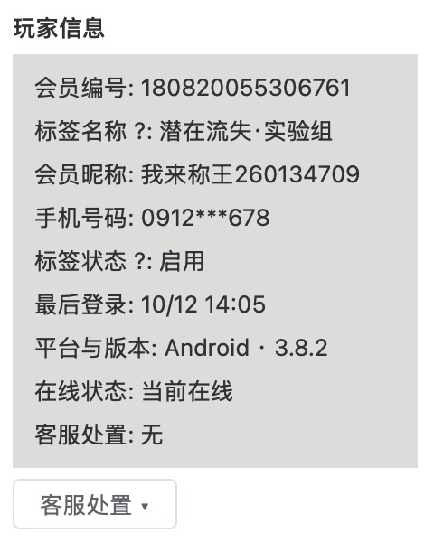
玩家查询 › 玩家信息
玩家信息 9 项：会员编号、标签名称、会员昵称、手机号码（中间打码）、标签状态、最后登录、平台与版本、在线状态、客服处置；旁边另列所属群组。页上没有储值金额、VIP 等级这类资料。
AI 评审：是 玩家信息 9 项都与排查有关，手机号打码，没有储值金额、VIP 等级
你判：
措辞与指代整页句式：开头与主语
14玩家查询页的说明栏和页上文字，没有成片以同一主语（如「客服」）或同一句式开头的句子，上下文已确定的主语没有逐句写出
看哪里 玩家查询整页与右侧说明栏|出处 你 10/15：「永远是运营在开头，这三个字真的有必要？」；措辞审查「整稿通读」
依据的标准怎么写
- 措辞审查「整稿通读」：逐句查完后通读全稿，同一开头、同一句式反复出现的删去或改写；全稿主体已经明确的不逐句写出，例如运营用的后台不写「运营在……」；补主语只补读者会读错或读不出的
- 你 10/15（当时原型改稿后有 63 处以「运营」开头）：「永远是运营在开头，这三个字真的有必要？真的认真检查措辞了吗？」
我们原型对应的部分
- 以「客服」「运营」开头的句子：没有；页上的「客服处置」是按钮名
- 说明栏 11 条的小标：改：移入本后台；今日已收与上限并列；新增「各推送方式能否收到」；新增「所属群组」；新增「收到记录」；两张弹窗顺序表不变；玩家信息加最后登录、平台与版本、在线状态、客服处置；目前符合发送对象的推送；收到记录可按推送或规则查，弹窗行可展开逐项结果；可触达区写由谁发送与最近一次状态变化；近 7 天汇总与原因对照。第 3–5 条连续以「新增」开头
- 页上的说明句（原文）
所属群组「按当前名单，每 25 分钟刷新」
目前符合发送对象的推送「按当前名单判断，到点按当时名单、可触达、勿扰与上限重新判断，不代表一定会收到，请勿向玩家承诺」
近 7 天汇总「超过上限的格子标红」
自动弹窗顺序「被优先级让出的规则灰显，注『由规则 N 弹出』」
说明栏第 1 条「查询条件和玩家信息照旧；手机号码改为中间打码显示」
AI 评审：是 无「客服」开头；「新增」小标只连续三条，其余开头各异，不成片
你判：
业内做法取自 NN/g、Ant Design 官方页面，已打开核对。
03参考案例：你推翻过的两份同类稿
例 1 把「有记录」写成「查不到」
- 你的原话
- 「全都有记录，不管是推播还是弹窗。但可能会有不全的地方。主要的大部分是有的」（10/10）
- 当时的稿
- 方案第二版问题四：把推播、弹窗的触达效果写成「查不到」（8 个数据项）
- 改后
- 删去问题四；记为已定：效果数据已有记录，可能部分不全，不写成「查不到」
例 2 弹窗数据只到规则汇总，当时评审已放行
- 你的原话
- 「推送系统弹窗的数据在哪里看？我怎么没找到？我看原型图里只有数据看板，而且很简陋啊。」（10/15）
- 当时的稿
- 10/14 原型：弹窗只有曝光、点击、点击率，最细到规则；没有单条规则的数据页，也没有按排序项、设置版本的数据
- 改后
- 加「单条弹窗规则数据」：漏斗每一步写人数与次数、少在哪；每次保存存为一个版本，各版本数据分开保留、可对比
04怎么判
直接在页面上点：每条下面点「同意」或「不同意」（不同意可写一句理由），页面最下面可补还缺的标准；点完自动保存，判完在对话里说一声「判完了」即可。
05还缺什么，判完没有
原文：原型 · 玩家查询 字段表 请你判的 10 份产出